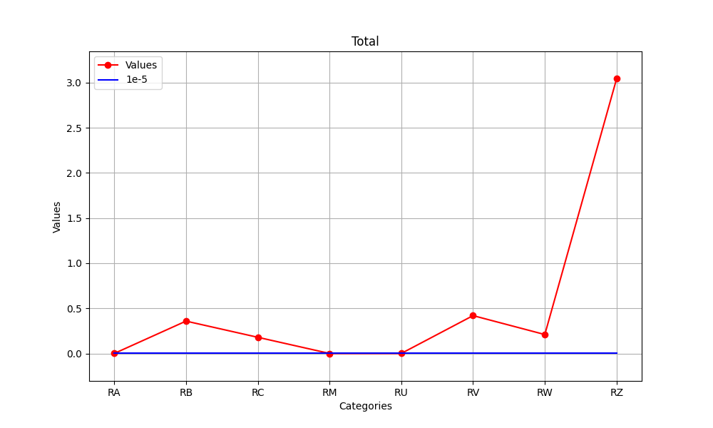
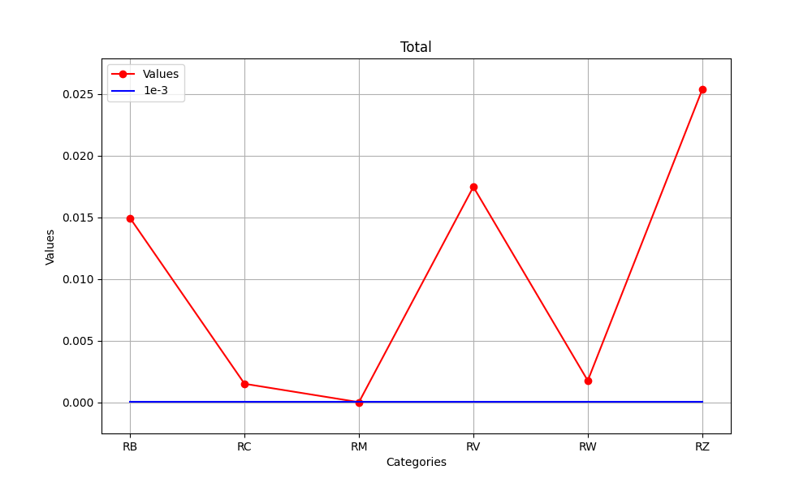

The risk R1 consists of following risk components:

To reduce the risk, it is necessary to take measures as described in 8.
7.2 Risk R2, Service to the public
The risk R2, failure of services to the public, was determined for the structure m as follows:
- Tolerable risk RT: 1,00E-03
- Calculated risk R2: 6.1e-02
The risk R2 consists of following risk components:

To reduce the risk, it is necessary to take measures as described in 8.